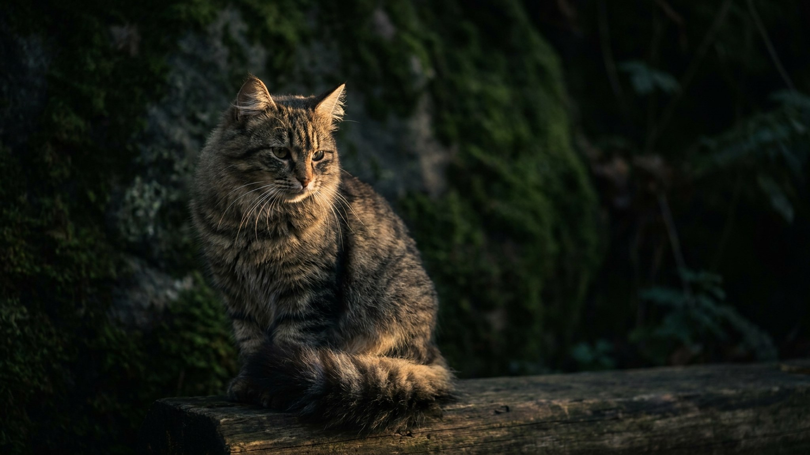

Кошка принесла игрушку и положила у ног — это не случайность и не совпадение. Меконгский бобтейл делает так регулярно, потому что его темперамент ближе к ретриверу, чем к типичной кошке. Короткий хвост-помпон с уникальным изгибом, колор-пойнт окрас и привязанность к одному человеку — разбираем, что стоит за этой редкой породой и кому она подойдёт.
Меконгский бобтейл получил название от реки Меконг, вдоль которой порода формировалась столетиями. Его хвост — не просто короткий: каждый изгиб и угол уникальны, как отпечаток пальца. Два одинаковых хвоста у разных особей не бывает.
Меконгский бобтейл — редкий случай, когда кошка искренне заинтересована в совместной деятельности с человеком, а не просто в его присутствии. Он следует за хозяином по квартире, участвует во всём, что происходит, и выбирает одного члена семьи как «своего» — привязанность глубокая и устойчивая.
🐾 Ваш питомец — меконгский бобтейл?
Заведите профиль в AnimaLife: приложение запомнит породу, возраст и вес и будет подсказывать по уходу именно для неё. Вопросы AI-ветеринару — круглосуточно и бесплатно.
Завести профиль → Завести в MAX →
У вас iPhone? AnimaLife есть в App Store
Короткая плотная шерсть — одно из главных практических преимуществ породы. Меконгский бобтейл не требует регулярной стрижки, не образует колтунов и линяет умеренно.
Меконгский бобтейл — порода для тех, кто хочет настоящего компаньона, а не независимое украшение квартиры. Он плохо переносит долгое одиночество: если хозяин пропадает на работе на 10–12 часов в день, это создаёт стресс для кошки.
Порода редкая — найти добросовестного заводчика с подтверждёнными документами важнее, чем поторопиться. Здоровье меконгского бобтейла считается крепким: плановые осмотры у ветеринара раз в год и своевременные вакцинации — стандартный минимум для любой кошки.
🐾 У вас меконгский бобтейл?
AnimaLife соберёт уход под породу: к каким болезням есть склонность, что проверять по возрасту, чем кормить и когда пора к врачу. Бесплатно, прямо в мессенджере.
Собрать план ухода → Собрать в MAX →
У вас iPhone? AnimaLife есть в App Store
🐾 Понравился разбор?
Подпишитесь на канал — каждый день разбираем по одному тревожному симптому у кошек и собак: что в пределах нормы, а когда пора к врачу. Подпишитесь, чтобы не пропустить разбор, который может спасти здоровье вашего питомца.
Материал носит информационный характер и не заменяет очную консультацию ветеринара.